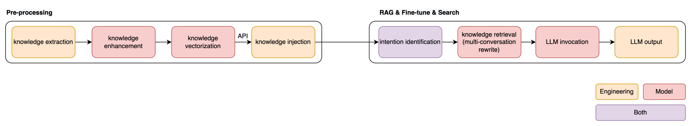
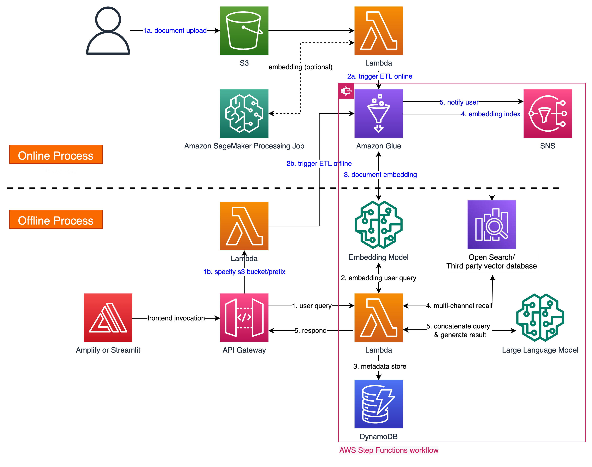

| :- | :- |
|---|---|
| 类型 | Guidance |
| 状态 | 即将发布 |
构建基于RAG技术的大语言模型 (LLM) 应用，例如：
该解决方案为客户快速构建基于RAG技术的大语言模型 (LLM) 应用 (如私有知识库构建、Gen BI等) 提供了端到端的实施框架，基于LangChain实现在线流程，方便针对不同场景进行逻辑定制。它支持企业常见文档格式 (如PDF、CSV、JSON等)，内置包含文档版式识别与内容提取、元数据转换、语义切分、意图识别、多路召回、Rerank在内的完整工作流，支持多种Embedding、Rerank和大语言模型 (如Claude)，帮助客户提升在内容提取、知识召回和模型最终输出上的准确性和完整性，降低生产落地难度。


合作伙伴Cloudsway已为其销售部门部署了内部使用的RAG聊天机器人。该聊天机器人基于CSDC正在研发的LLM Bot，并通过Cloudsway自研的UI调用LLM Bot的API，向用户提供精确的信息问答服务。在部署到生产环境之前，合作伙伴对比测试了LLM Bot和另一个基于开源Bisheng (毕升) 平台的RAG应用。结果显示，由于CSDC的解决方案采用了独特的数据ETL管道和检索策略优化，在内容提取和知识检索的准确性和完整性方面远胜于另一个方案。基于亲身的成功实践，Cloudsway已经将LLM Bot作为候选方案推荐给寻求RAG方案的客户。
| :- | :- |
|---|---|
| 产品经理 | Wenmeng Gao |
| GTM经理 | Pu Zhang |
请通过您的客户经理或合作伙伴经理联系我们。